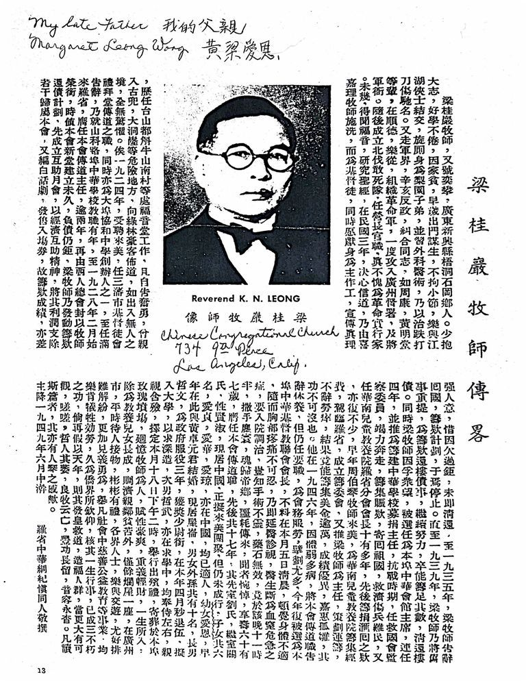

Obituary for Reverend K. N. Long

中文录入
English Translation
Brief Biography of Reverend Liang Guiyan
Reverend Liang Guiyan, also known by the name Yipan, was a native of Shigang Village, Wudong, in Xinning County (now Xinyi City), Guangdong Province. From a young age, he harbored great ambitions and was tireless in his studies. Due to family poverty, he left home early to seek a livelihood. Unconstrained by trivial formalities, he enjoyed befriending righteous and chivalrous individuals. He briefly joined an opera troupe as a performer and also studied the art of external medicine, later becoming renowned for treating injuries from falls and wounds.
He subsequently became involved in military circles. During the 1911 Revolution, he rallied comrades such as Zhou Kang and Huang Mingtang, organizing a revolutionary army in Shunde and Lecong. They once attacked the Governor's Office and the General's Yamen in Guangzhou. Later, he helped establish a Northern Expedition Dare-to-Die Corps, serving as a battalion commander, truly proving himself a practitioner of revolution.
In his later years, he encountered the Gospel and studied the Bible. In the third year of the Republic of China (1914), he resolved to believe and was baptized by Reverend H. R. H. G. becoming a Christian. Simultaneously, he vowed to dedicate himself to the Lord's work, preaching the truth. He successively served in gospel churches in places such as Taishan and Nancun, Honiushan. He even volunteered to personally enter dangerous areas like Gudou and Dadonglong to preach to bandits and outlaws, moving as if through unpopulated land, entirely without fear.
In 1924, he was invited to the United States, taking up the position of preacher at the Christian Church in San Francisco. He was also one of the founders of Xiehe Secondary School in San Francisco. After his term concluded, he resigned and taught for several years at the Chinese School in Stockton. In February 1928, he finally came to Los Angeles to assume the position of Preaching Director of our church.
After more than two years, he was ordained as a Reverend by the Western General Assembly. At that time, our church's new building had just been completed, and the debt remained substantial. Reverend Liang initiated a fundraising plan to repay the debt. He first established a Mutual Aid Monthly Society, utilizing the spirit of economic mutual aid, directing a portion of its profits to our church. He also compiled vernacular plays and sold admission tickets. Thus, the fundraising results were fairly satisfactory, though unfortunately, due to the excessive debt, it was not immediately cleared.
By 1935, Reverend Liang resigned and returned to China, and the fundraising plan consequently halted. It wasn't until 1939 that Reverend Liang revived the old plan, continuing efforts specifically to raise funds to clear the building debt. He ultimately succeeded in raising the full amount and clearing the debt.
Concurrently, because Reverend Liang enjoyed high public esteem, he was elected Chairman of the local Chinese Consolidated Benevolent Association, serving for four consecutive years. He was also appointed Director of Fundraising for the construction of a Chinese School. During the War of Resistance against Japan, he served as a Supervisory Committee member for the Save the Nation Association, striving diligently to raise relief funds sent back to China to aid wounded soldiers and refugees. He also served as President of the Los Angeles Branch of the South China Children's Home for over ten years, raising and remitting a significant amount of funds over the years.
Earlier, when Reverend Zhou Boqin came to the U.S. to raise funds for the South China Children's Home and visited Los Angeles, a fundraising committee was established, again electing Reverend Liang as Director. He planned and strategized, sparing no effort, ultimately managing to raise over ten thousand U.S. dollars, an outstanding achievement that greatly benefited orphaned children. His contribution cannot be overlooked.
In 1946, due to physical weakness and illness, he resigned from his preaching duties at our church to convalesce. However, he still held important positions and served the church's affairs, contributing particularly to planning and strategy. This year, he was again elected President of the local Chinese Christian Union.
Unexpectedly, on the morning of the 5th of this month, he suddenly felt unwell, followed by unbearable chest pain. A doctor was summoned immediately, who diagnosed a critical condition of blood stagnation and recommended hospitalization for treatment. Unfortunately, medical procedures were ineffective, and medicines provided no cure. He passed away at half-past eleven that night, departing this mortal world and returning to the Heavenly Home. The sad news brought grief and mourning to all who heard it. He was sixty-seven years old.
He served as Preaching Director of our church for a total of seventeen years, intermittently. His first wife was née Liu, and his subsequent wife was née Guan; both were virtuous and now reside in China. Plans were being made for them to come to the U.S. for reunion, but this had not yet happened. He had six children in total: Aizhen, Aihua, Aiqiong (all in China and married), and his younger daughter Aien, who previously married Mr. Huang Zhuoyuan here and now lives in Oakland. There are ten grandchildren in total.
His eldest son, Zhewen, served in government service for three years, receiving a commission as a Second Lieutenant. He was discharged at the end of April this year and plans to enter university for further studies. His second son, Zhewu, is also studying. Both sons were present at his side, attending to him and overseeing the funeral arrangements.
The funeral procession is scheduled for the 18th of this month at 2:00 PM, with interim burial at the local Rose Hills Memorial Park.
Reflecting on Reverend Liang's character: he was endowed with a bold and straightforward nature, valued righteousness over wealth. Throughout his life, his earnings, besides raising his children to adulthood and aiding poor and suffering relatives and neighbors, left only a dilapidated house in Guangzhou City. In daily interactions, he was courteous and refined, and people from all walks of life enjoyed his friendship. He was particularly adept at resolving difficulties and disputes and was even more ready to act courageously for a just cause. He was always willing to sacrifice and serve in charitable, public welfare, and educational endeavors within the community, long admired by the overseas Chinese community.
Considering the events of his life, he has already achieved the three imperishable (moral character, meritorious service, and enduring teachings). Alas! The wise man withers; the good shepherd is gone. His great achievements remain long behind; his voice and countenance are forever lost. All who read this account, will they not share the sentiment of mourning for a departed friend?
Written mid-June, 1949
By the Congregation of the Chinese Christian Church of Los Angeles, with respect.
Notes
Edits autosave on blur.